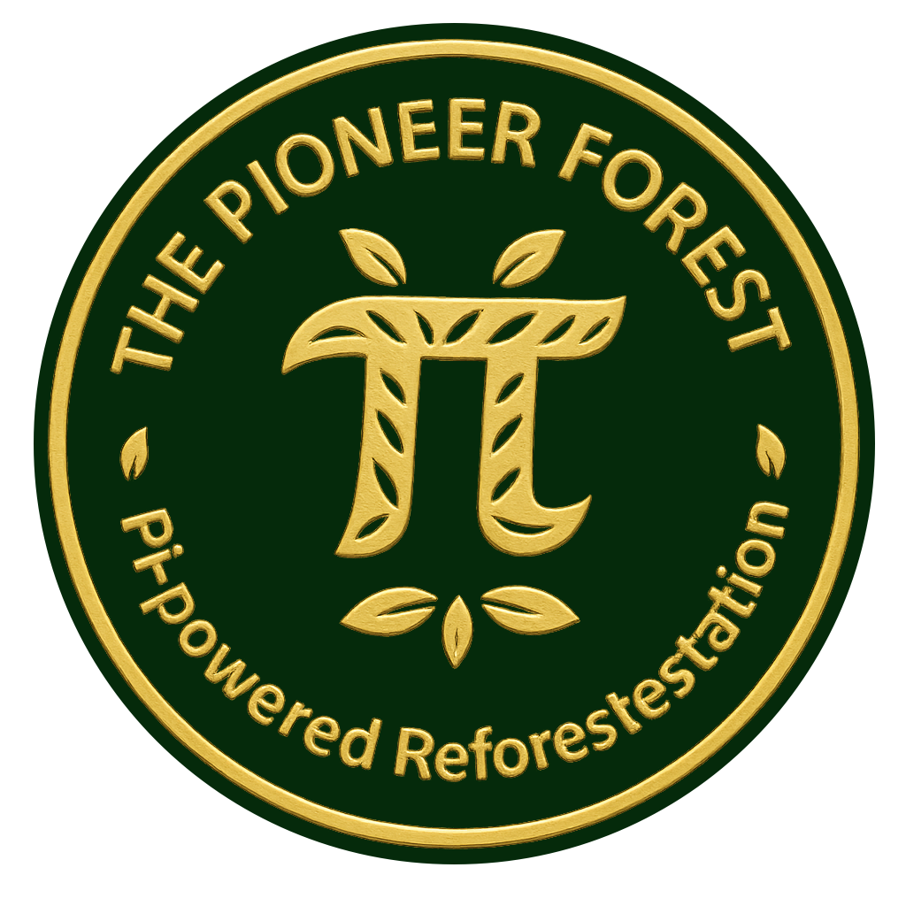

How to Support
A clear path for contributions, attribution, and public record.
The Pioneer Forest is a community-driven initiative within the Pi Network ecosystem.
Support for The Pioneer Forest funds documented reforestation impact through independent planting and CO₂ offset projects.
Contributions are handled through the Pi ecosystem and recorded with transparency through public updates and linked evidence where available.
Pi Browser
Full functionality for Pi wallet transactions and partner services is available within the Pi Browser environment.
Official Donation Wallet
Send Pi contributions to the official wallet of The Pioneer Forest:
GDJQWS634MNY2XQ6FKOM6Z2PP5RQWEWLBNQICV43WI4IVWT3RC7VHD3M
Always verify the address using official The Pioneer Forest sources.
The official wallet address and current instructions are also published on Fireside for verification: View official update →
Transaction Note
If you want your contribution credited publicly, include your Pi username in the note of the transaction.
TPF YourPiUsername
Use your Pi Network username exactly as shown in your account.
If the username is missing or unclear, the contribution will be handled as anonymous and recorded as Arboris.
What Happens After Donation
Verified contributions are converted into documented reforestation impact, such as tree planting and CO₂ offset activity.
The Pioneer Forest follows a baseline of minimum 30 kg CO₂ offset per Pi contributed, in line with the current public rule update .
Depending on project conditions, species, and availability, actual outcomes may exceed this baseline.
Public Record
Verified contributions are documented on the Fireside #ThePioneerForest channel.
Posts may include attribution, transaction reference, certificate links, tree links, or other supporting details where appropriate.
- Named contributions are credited to the provided Pi username.
- Contributions without a clear username are recorded as Arboris.
- Anonymous contributions are recorded without personal identifiers.
Verification
Transactions can be checked on the Pi Block Explorer .
Reforestation activity is carried out through independent providers such as Tree-Nation .
Safety Notice
Only use official links published on this website or on the verified Fireside channel. The Pioneer Forest does not request donations through unsolicited private messages.
Questions
You can contact egal42 through Pi Chats or through the Fireside forum.
Response times may vary depending on availability and external commitments.